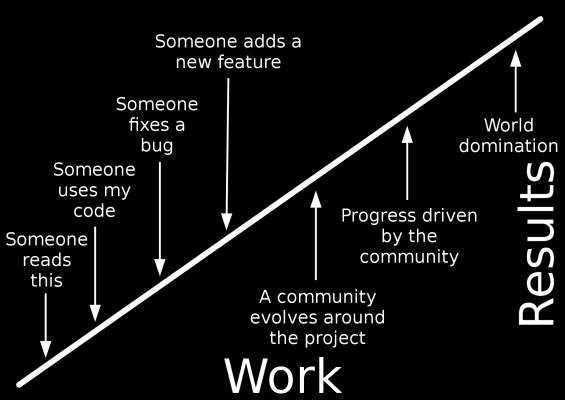
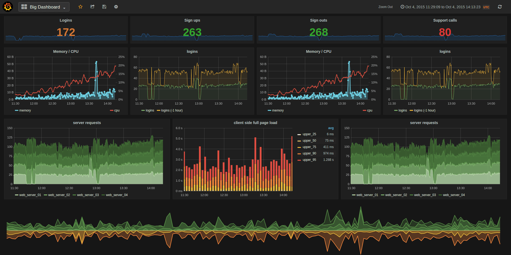
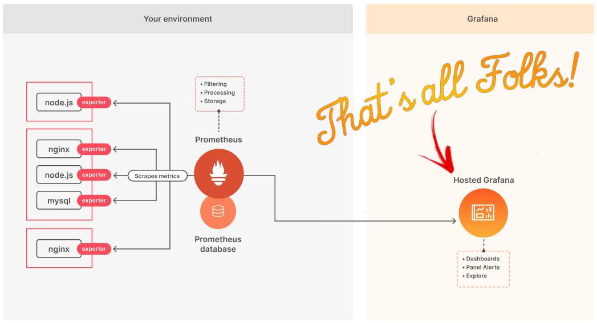
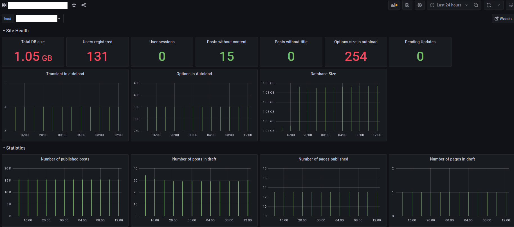
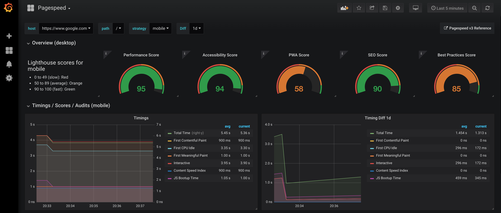
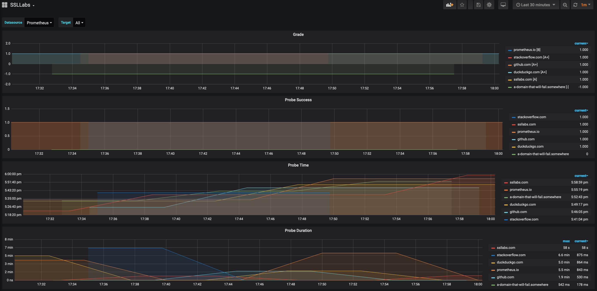
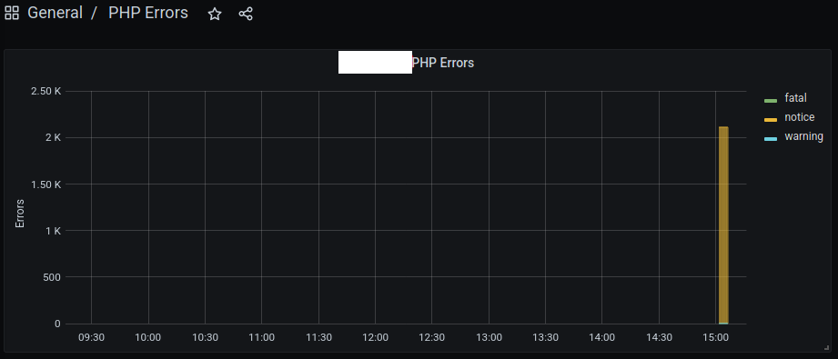
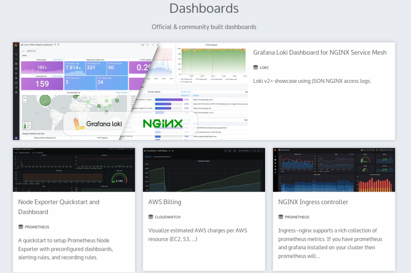

Grafana
la bellezza dei dati salverà il mondo
Created by Daniele Scasciafratte / @Mte90net
Daniele Scasciafratte
- Co Founder/CTO Codeat
- Italian Linux Society Council member
- LUG Rieti founder
- WordPress Core Contributor/Developer
- WordPress Rome/Terni meetup
- Mozillian & Mozilla Reps & Mozilla Italia
- Open Source Addicted
La bellezza del dato salverà il mondo
 Non importa se il grafico è bello, quello che importa è il contenuto e la sua comprensione.www.datibenecomune.it
forum.linux.it/t/analisi-sondaggio-italian-linux-society-2021/216.
L'occhio vuole la sua parte
Dashboard pubbliche
- covid-19.aircode.it - Stato Covid in Italia, per regione ecc
- dashboards.gitlab.com - Stato server di GitLab.com
- grafana.wikimedia.org - Stato Server Wikimedia
- monit-grafana-open.cern.ch - Stato macchine CERN
- stats.voice.mozit.cloud - Mozilla Common Voice in numeri
- dashboard.documentfoundation.org - Contributi a LibreOffice (Kibana)
- avanzamentodigitale.italia.it - Monitoraggio dei progetti di trasformazione digitale (Personalizzata)
Cos'è Grafana
- Applicativo Web per la visualizzazione e analisi interattiva di dati
- Sofware Open Source con azienda che si occupa dello sviluppo di prodotti aggiuntivi e servizi
- Scritto in Go e TypeScript, multipiattaforma
- Requisiti minimi 256mb di Ram e 1 CPU
- Si può estendere tramite plugin e il suo gestore pacchetti
- Si interfaccia con Database o fonti dati differenti (113 fonti diverse)
- Le dashboard si creano da interfaccia
- Utenti e gruppi con permessi diversi
Qualche esempio reale
Siete carichi? Io si!
Come funziona
Prometheus DB e Grafana
- Prometheus: Scansiona una pagina ogni tot minuti/giorni/mesi/ecc
- Prometheus: Si crea o si utilizza un exporter*
- Prometheus: Si configura globalmente quanto tempo conserva i dati*
- Grafana: Si crea una dashboard che interroga i dati
- Grafana: La dashboard può mandare notifiche in base ai dati
- Prometheus/Grafana: Si mette in rete locale con accesso alla macchina o esterno
Esempio configurazione Prometheus
- job_name: "WordPress metrics"
static_configs:
- targets: ["domain.tld"]
scrape_interval: "5m"
metrics_path: "/wp-json/metrics"
params:
prometheus: ['fg98dfgkj']
users: ['yes']
posts: ['yes']
pages: ['yes']
autoload: ['yes']
transient: ['yes']
user_sessions: ['yes']
posts_without_content: ['yes']
posts_without_title: ['yes']
db_size: ['yes']
pending_updates: ['yes']
scheme: "https"Esempio Dati Prometheus Exporter
# HELP wp_users_total Total number of users.
# TYPE wp_users_total counter
wp_users_total{host="https://domain.tld"} 117
# HELP wp_posts_total Total number of posts published.
# TYPE wp_posts_total counter
wp_posts_total{host="https://domain.tld", status="published"} 11786
wp_posts_total{host="https://domain.tld", status="draft"} 134Dati in Dashboard
 CodeAtCode/Prometheus-Metrics-in-WordPressPageSpeed in Grafana
 foomo/pagespeed_exporterSSLabs in Grafana
 anas-aso/ssllabs_exporterPHP Errors in Grafana
 CodeAtCode/phperrorlog_exporterFonti di dati native
- Prometheus, Influx DB, ...
- MySQL, PostgreSQL, MongoDB, Redis, ...
- GitHub, GitLab, ...
- Discourse Datasource, Google BigQuery, ...
- Google Calendar, SalesForce, Elasticsearch, ...
- JSON, SQLite, ...
grafana.com/grafana/plugins/?type=datasource
Notifiche native
- Discord, Telegram
- Microsoft Teams, Slack
- Webhook
Dashboard già pronte
 grafana.com/grafana/dashboards/Per provarlo
E tu per cosa lo useresti?

http://mte90.tech/Talk-Grafana
La Privacy nel mondo dei social network